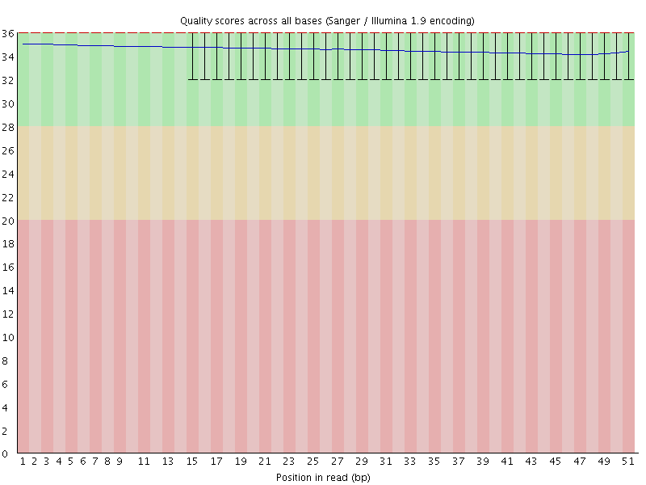
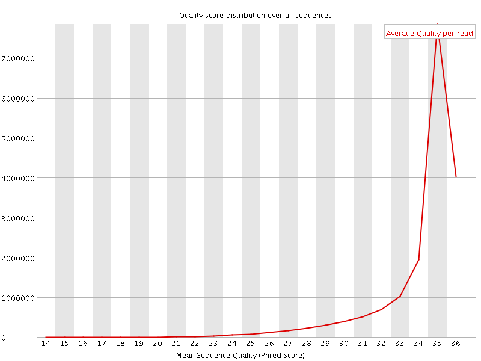
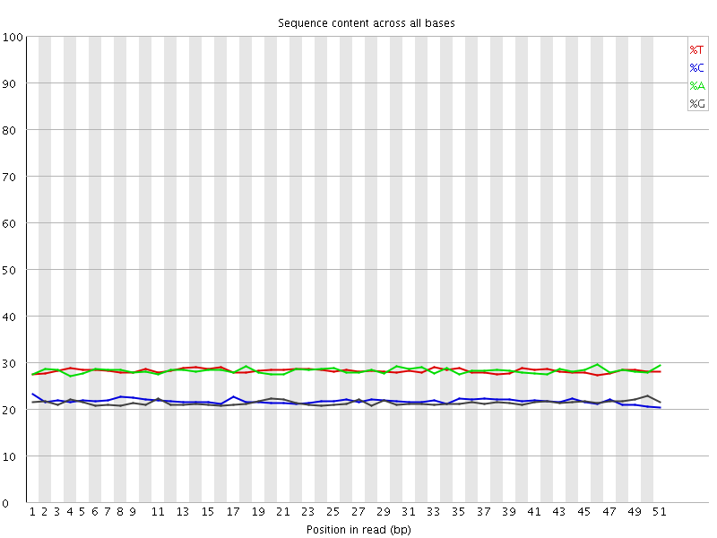
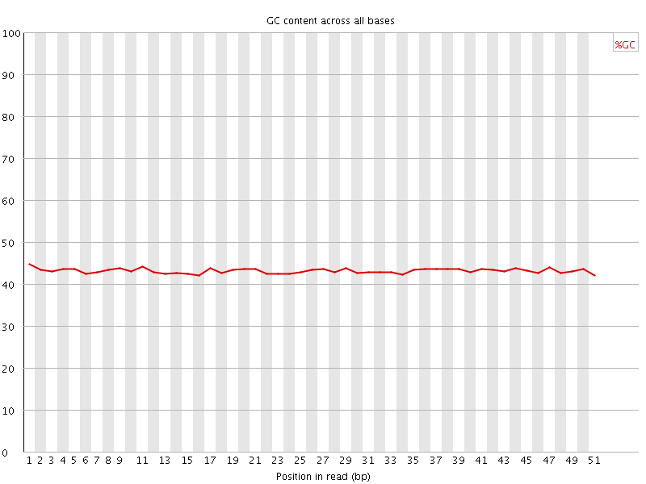
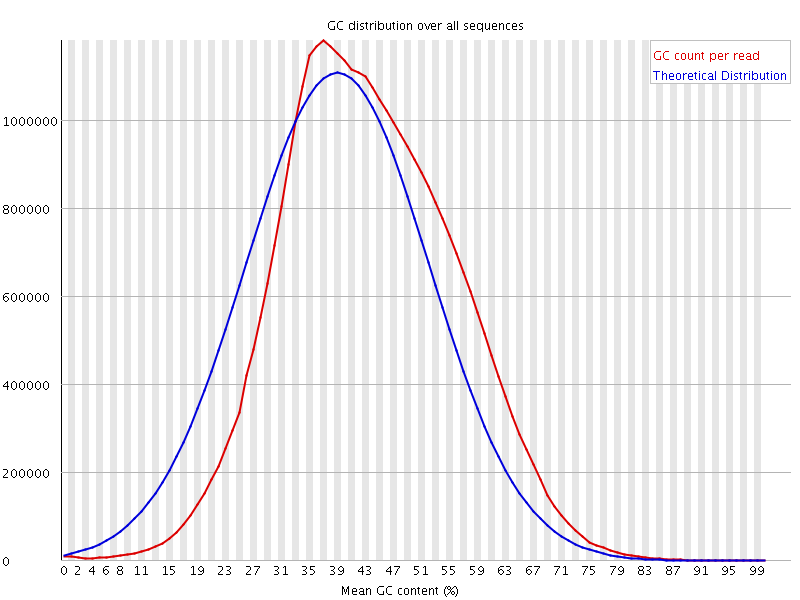
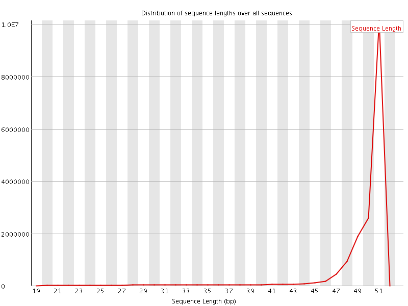
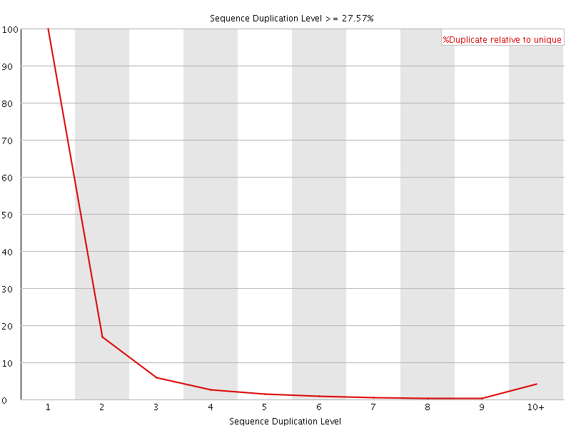
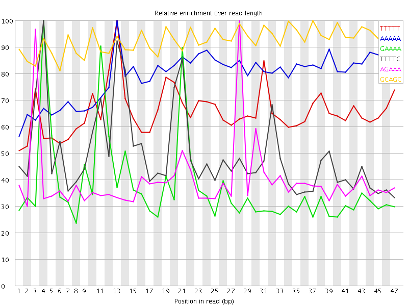

![[OK]](Icons/tick.png) Basic Statistics
Basic Statistics
| Measure | Value |
|---|---|
| Filename | 030-F0_S1_L001_R1_001_trimmed.fq.gz |
| File type | Conventional base calls |
| Encoding | Sanger / Illumina 1.9 |
| Total Sequences | 17563031 |
| Filtered Sequences | 0 |
| Sequence length | 20-51 |
| %GC | 43 |
Per base sequence quality

Per sequence quality scores

Per base sequence content

Per base GC content

![[WARN]](Icons/warning.png) Per sequence GC content
Per sequence GC content

Per base N content

Sequence Length Distribution

Sequence Duplication Levels

Overrepresented sequences
| Sequence | Count | Percentage | Possible Source |
|---|---|---|---|
| CAAGAAAACTGAAAATCATGGAAAATGAGAAACATCCACTTGACGACTTGA | 19642 | 0.11183718801156817 | No Hit |
Kmer Content

| Sequence | Count | Obs/Exp Overall | Obs/Exp Max | Max Obs/Exp Position |
|---|---|---|---|---|
| TTTTT | 5942855 | 4.0957875 | 6.2386346 | 13 |
| AAAAA | 5876005 | 4.0546694 | 5.1171217 | 13 |
| GAAAA | 3536525 | 3.2219756 | 8.583937 | 4 |
| TTTTC | 3592765 | 3.2134721 | 6.440878 | 4 |
| AGAAA | 3419915 | 3.1157372 | 7.82444 | 28 |
| GCAGC | 1485380 | 3.0078065 | 3.24676 | 37 |
| CCAGG | 1453240 | 2.942725 | 5.8285985 | 35 |
| AAGAA | 2830540 | 2.578783 | 5.4621034 | 2 |
| GGAAA | 2016855 | 2.426009 | 8.518598 | 20 |
| GAGAA | 1999430 | 2.405049 | 8.755525 | 27 |
| AAAAT | 3280865 | 2.2633696 | 5.8875494 | 22 |
| GAGGA | 1396540 | 2.2179072 | 5.1126165 | 2 |
| TCCTC | 1467185 | 2.2102304 | 5.5386395 | 24 |
| GGTGG | 1051470 | 2.2042096 | 5.341462 | 18 |
| CCACC | 1112265 | 2.175057 | 6.3226056 | 8 |
| TGGAA | 1792165 | 2.1552098 | 6.0127015 | 19 |
| TTCAG | 1716215 | 2.0276923 | 5.430078 | 15 |
| TGAAA | 2217015 | 2.0193331 | 6.694218 | 10 |
| CTGAA | 1689350 | 1.9964399 | 7.947573 | 9 |
| AAATG | 2160720 | 1.9680578 | 6.887038 | 23 |
| TCCAC | 1303290 | 1.9638122 | 5.7382526 | 35 |
| CATTT | 2133270 | 1.9085246 | 6.7224092 | 1 |
| AAAAC | 2077885 | 1.860339 | 6.5198607 | 5 |
| GTGGA | 1115975 | 1.771896 | 6.22064 | 47 |
| TGAGA | 1471110 | 1.7691176 | 8.100213 | 26 |
| CCACT | 1096420 | 1.652098 | 5.909968 | 36 |
| CATGG | 1046195 | 1.6323807 | 6.562584 | 17 |
| CAAGA | 1311590 | 1.5503899 | 5.7800484 | 1 |
| AGTGG | 950905 | 1.5098051 | 5.619331 | 46 |
| AATGA | 1641625 | 1.4952482 | 6.30632 | 24 |
| ATGGA | 1239020 | 1.4900123 | 5.46533 | 18 |
| CATCC | 986910 | 1.4870872 | 5.3954134 | 33 |
| ATGAG | 1219865 | 1.466977 | 7.746609 | 25 |
| CTTGA | 1217205 | 1.4381166 | 6.5698276 | 47 |
| ACTGA | 1215810 | 1.4368198 | 7.230191 | 8 |
| CACTT | 1234040 | 1.4327971 | 6.878868 | 37 |
| AACTG | 1209325 | 1.4291558 | 7.235876 | 7 |
| AAACT | 1510875 | 1.3523619 | 5.854873 | 6 |
| AAATC | 1482770 | 1.3272054 | 6.0830827 | 13 |
| AAGTG | 1093930 | 1.315531 | 5.1218724 | 47 |
| ACTTG | 1100660 | 1.3004197 | 5.490113 | 46 |
| AATCA | 1329100 | 1.1896576 | 5.926257 | 14 |
| CCTCG | 442100 | 0.879532 | 5.0705056 | 25 |